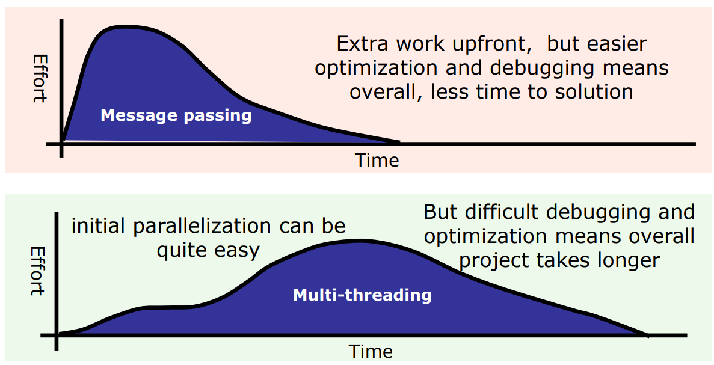
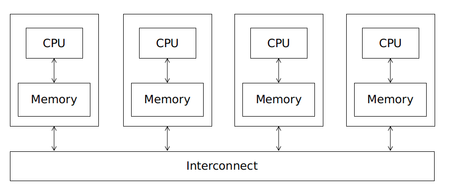
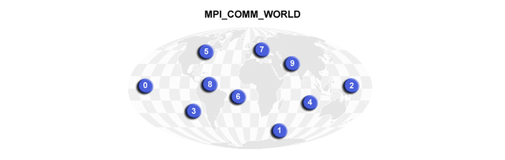

MPI
Multithreading vs Message Passing
We should just abandon threading? [1]

Shared Memory vs Distribured Memory


Introduction
- The message passing interface (MPI) is a standard library
- Hardware-portable, multi-language communication library
- MPI implementations
- MPICH
- Open MPI
Basics
1 |
|
MPI_init
MPI_init() must be called before any other MPI functions can be called and it should be called only once.
1 | int MPI_Init(int *argc, char ***argv) |
MPI_Finalize
All MPI processes must call this routine before exiting.
1 | int MPI_Finalize() |
Compile
Library version: User tells compiler where header file and library are
1 | gcc -Iheaderdir -Llibdir mpicode.c –lmpich |
Wrapper version: hides the details from the user
1 | mpicc -o executable mpicode.c |
Execute
1 | mpiexec -n 8 -host node1,node2 /hello |
1 | mpiexec -n 8 -hostfile <hostfile> ./hello |
Communicators

- Communicator is an internal object
- MPI Programs are made up of communicating processes
- Each process has its own address space containing its own attributes such as rank, size (and argc, argv, etc.)
- MPI provides functions to interact with it
- Default communicator is
MPI_COMM_WORLD:- All processes are its members
- It has a size (the number of processes)
- Each process has a unique rank within it
- One can think of it as an ordered list of processes
- Additional communicator(s) can co-exist
- A process can belong to more than one communicator
1 |
|
MPI_Comm_size
Determines the size of the group associated with a communicator.
1 | int MPI_Comm_size (MPI_Comm comm, int *size) |
MPI_Comm_rank
Returns the rank of the calling process in the group underlying the comm.
1 | int MPI_Comm_rank (MPI_Comm comm, int *rank) |
Tim Mattson, “Recent developments in parallel programming: the good, the bad, and the ugly”, Euro-Par 2013 ↩